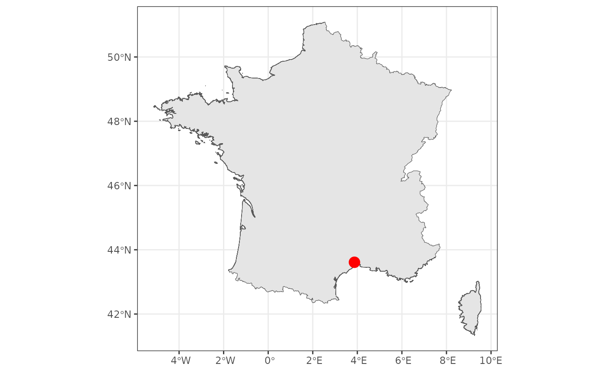

The package rgeoservices is a R client streamlining
access to the services provided by the French National Institute of
Geographic and Forest Information (IGN) through its open access Geoplatform.
This Geoplatform can be used to query the IGN BD TOPO® database to
retrieve geographical information.
Note: The IGN Geoplatform provides information only for French locations.
Let’s load and attach the package rgeoservices.
The Geocoding service
The IGN Geoplatform provides the Geocoding service. This service can be used in two different ways:
- to retrieve geographical coordinates and administrative information from an address (or a point of interest)
- to retrieve an address (or a point of interest) from geographical coordinates.
Retrieve geographical coordinates
User can retrieve geographical coordinates and administrative
information (postal code, INSEE code, city, etc.) from any French
address (postal address, street, city) or any point of interest (POI)
such as city hall, museum, public garden, lake, etc. This service is
implemented in the gs_get_coordinates()
function of rgeoservices.
Postal address
Let’s try to retrieve geographical coordinates of a postal address.
## Retrieve coordinates from an address ----
x <- gs_get_coordinates(
query = "5 rue de l'Ecole de Médecine",
index = "address",
limit = 10
)| query | longitude | latitude | label | name | toponym | housenumber | street | city | postcode | citycode | context | category | score |
|---|---|---|---|---|---|---|---|---|---|---|---|---|---|
| 5 rue de l’Ecole de Médecine | 2.341955 | 48.85059 | 5 Rue de l’Ecole de Médecine 75006 Paris | 5 Rue de l’Ecole de Médecine | NA | 5 | Rue de l’Ecole de Médecine | Paris | 75006 | 75106 | 75, Paris, Île-de-France | NA | 0.96654 |
| 5 rue de l’Ecole de Médecine | 3.873477 | 43.61278 | 5 Rue Ecole de Médecine 34000 Montpellier | 5 Rue Ecole de Médecine | NA | 5 | Rue Ecole de Médecine | Montpellier | 34000 | 34172 | 34, Hérault, Occitanie | NA | 0.80125 |
The argument index is used to indicate to search from an
address (index = 'address') or a point of interest
(index = 'poi'). Depending on the value of this argument,
some columns can be NA.
User can filter results by using additional parameters:
-
postcodeorcityto specify the postal code or the city name associated to the address -
typeto specify the precision of the address, e.g.housenumber,street,locality, ormunicipality
## Retrieve coordinates from an address (with filters) ----
x <- gs_get_coordinates(
query = "5 rue de l'Ecole de Médecine",
index = "address",
limit = 10,
postcode = "34000",
type = "housenumber"
)| query | longitude | latitude | label | name | toponym | housenumber | street | city | postcode | citycode | context | category | score |
|---|---|---|---|---|---|---|---|---|---|---|---|---|---|
| 5 rue de l’Ecole de Médecine | 3.873477 | 43.61278 | 5 Rue Ecole de Médecine 34000 Montpellier | 5 Rue Ecole de Médecine | NA | 5 | Rue Ecole de Médecine | Montpellier | 34000 | 34172 | 34, Hérault, Occitanie | NA | 0.80125 |
Using these filters can help getting better results.
Let’s display the result on an interactive map.
## Convert to spatial object ----
x <- sf::st_as_sf(
x = x,
coords = c("longitude", 'latitude'),
crs = sf::st_crs(4326)
)
## Setup 'mapview' ----
mapviewOptions(
basemaps = "OpenStreetMap",
legend = FALSE,
layers.control.pos = "topright"
)
## Interactive map of the result ----
mapview(
x = x,
color = "white",
col.regions = "red",
cex = 10
)City
Let’s try to retrieve geographical coordinates of a city.
## Retrieve coordinates from a city ----
x <- gs_get_coordinates(
query = "Montpellier",
index = "address",
limit = 10,
postcode = "34000",
type = "municipality"
)| query | longitude | latitude | label | name | toponym | housenumber | street | city | postcode | citycode | context | category | score |
|---|---|---|---|---|---|---|---|---|---|---|---|---|---|
| Montpellier | 3.87048 | 43.61048 | Montpellier | Montpellier | NA | NA | NA | Montpellier | 34000 | 34172 | 34, Hérault, Occitanie | NA | 0.96146 |
Let’s map the result.
## Convert to spatial object ----
x <- sf::st_as_sf(
x = x,
coords = c("longitude", 'latitude'),
crs = sf::st_crs(4326)
)
## Download static map of France (GADM) ----
gadm_fra0 <- geodata::gadm(
country = "France",
level = 0,
path = "."
)